すべての教材
57本の教材
- ゆっくり学ぶ西洋美術史
- もっと！ゆっくり学ぶ西洋美術史
- 日本美術史
- もっと詳しく知りたい
- 美術検定 実践問題対策
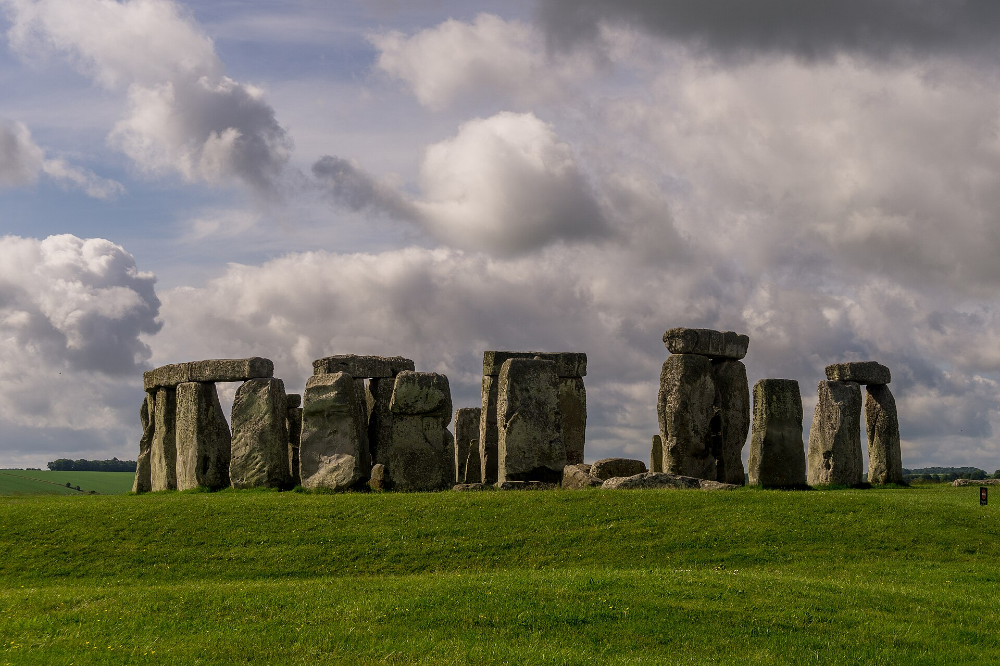
原始時代の美術
洞窟壁画から女性像、巨石文化へ

メソポタミアの美術
都市と信仰、そして支配者を表す造形
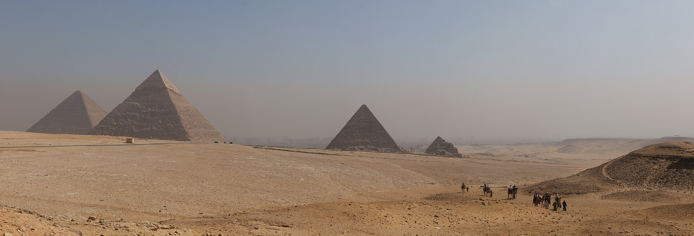
エジプトの美術
死後の世界と永遠性、伝統とアマルナ美術

エーゲ海の美術
島々の大理石像、クレタの色彩、ミケーネの黄金

ギリシャの美術
幾何学様式から、理想の人体とヘレニズムへ
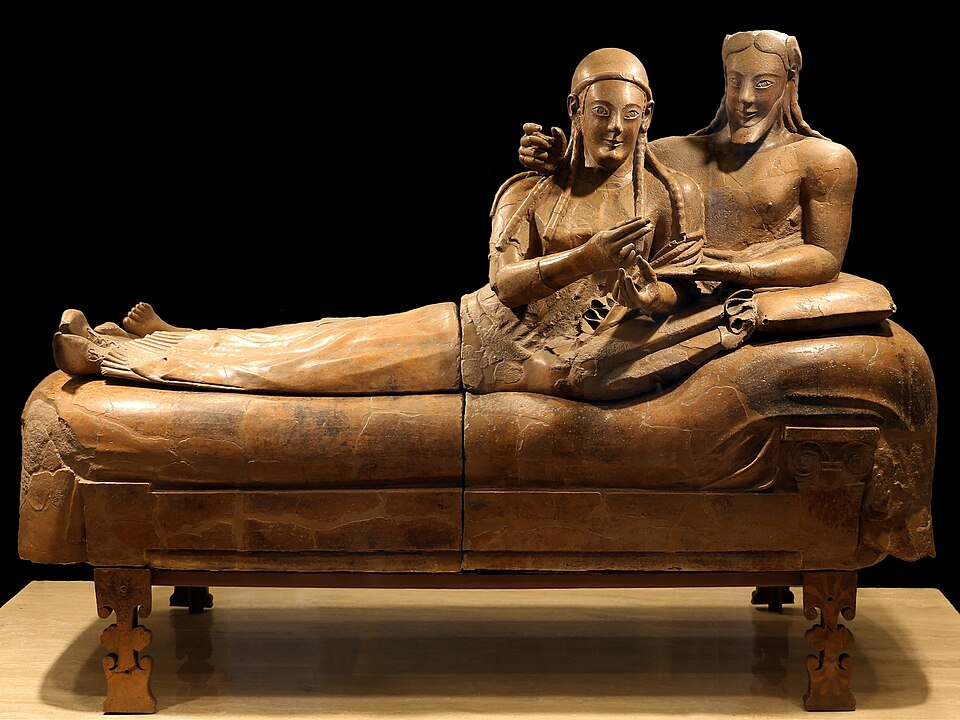
エトルリアの美術
来世の宴会、テラコッタ、黒く輝く器
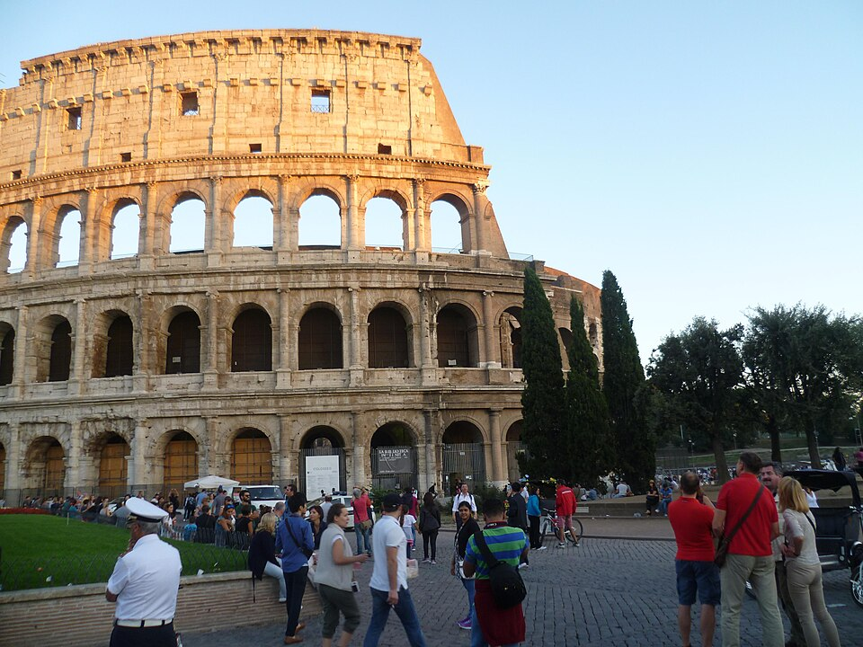
ローマの美術
帝国の建築、皇帝の肖像、都市の装飾

初期キリスト教の美術
地下墓所の暗示から、聖書を伝える教会へ

ビザンティンの美術
黄金のモザイク、聖像論争、受け継がれる表現

初期中世の美術
動物文様、古代の復興、地域ごとの装飾写本
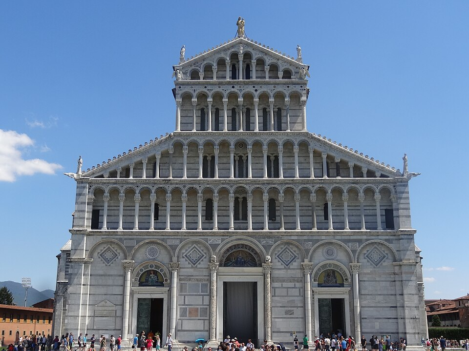
ロマネスクの美術
巡礼路の石造教会、枠に合わせた彫刻、地域の壁画

ゴシックの美術
光に満ちた大聖堂から、空間と感情を描く絵画へ

初期ルネサンス
都市の危機と人文主義から、遠近法と工房の技術継承へ

盛期ルネサンス
三大巨匠の理想美と、ヴェネツィアの色彩から次の時代へ

北方ルネサンス（前編）
ネーデルラントの商業と宮廷から、細密描写と民衆の世界へ

北方ルネサンス（後編）
ドイツの信仰と版画から、自然研究・宗教改革・肖像画へ

マニエリスム
巨匠の手法から、蛇状人体・宮廷の寓意・ヴェネツィアの光へ

バロック
宗教改革と宮廷、市民の暮らしから読む17世紀の美術

ロココ
貴族の雅宴と日常、装飾芸術からイギリス・イタリア・ゴヤへ

新古典主義
古代の理想美、革命と帝政、ダヴィッドからアングルへ
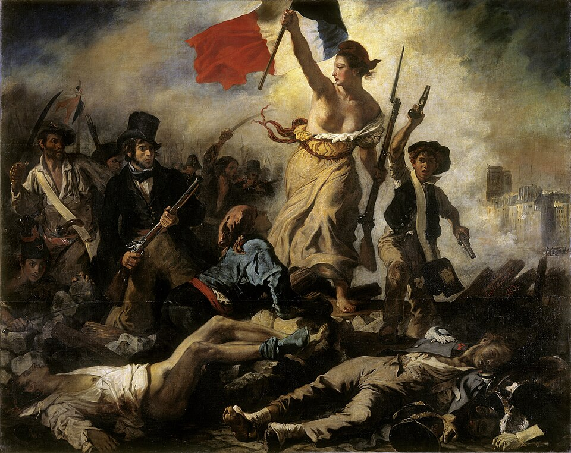
ロマン主義
感情と個性、革命の絵画から自然の光と畏怖へ

バルビゾン派
森と田園を観察する画家たち、風景画から印象主義への橋

写実主義
社会の現実を描く――クールベ、ミレー、ドーミエの選択

印象主義
都市の現在、光の色、画家たちが選んだ独立への道

新印象主義
点で分ける色、計算する光――スーラからシニャックへ
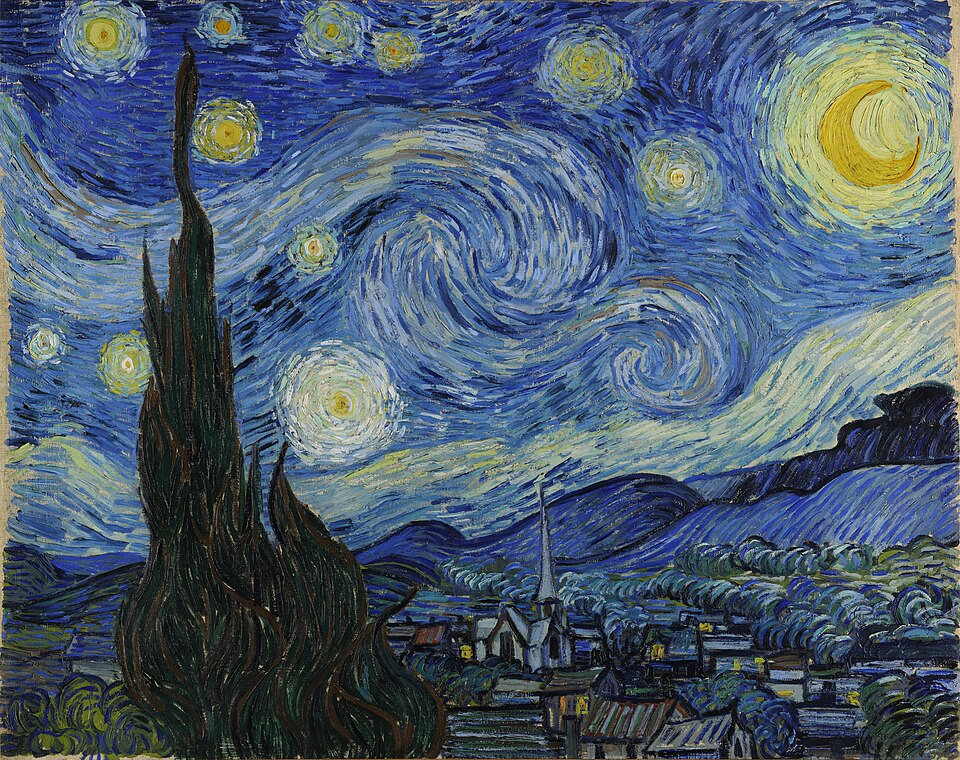
ポスト印象主義
形と意味を取り戻す――セザンヌ、ゴッホ、ゴーギャン
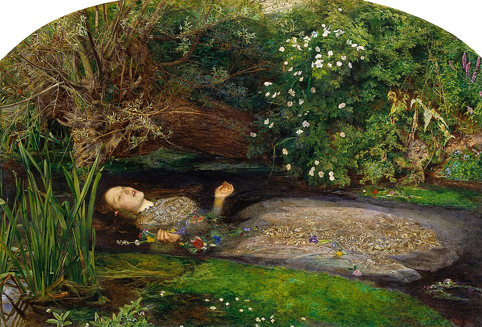
ラファエル前派
自然への忠実さ、詩的な想像力――若い画家たちの反抗と展開

アーツ・アンド・クラフツ運動
手仕事と暮らしの美――モリスが求めた、よいものを作る喜び

アール・ヌーヴォー
自然の曲線と新素材――建築・工芸・ポスターが結ぶ新しい芸術

象徴主義
目に見えない感情と理念を描く――文学、魔性の女性、死と夢の世界

ポン・タヴェン派／ナビ派
自然と主観の総合から、色彩の平面と親密な日常へ

近代彫刻
英雄の記念碑から、生きた人間と抽象的な概念の表現へ
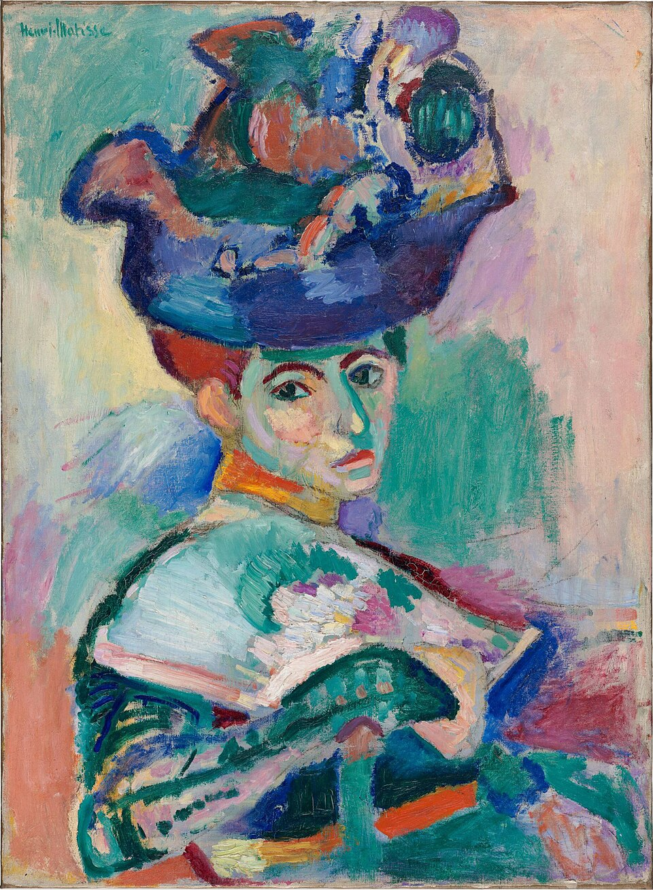
フォーヴィスム
自然を写す色から、感情を表す色へ――マティスと野獣派

表現主義
ドイツの歴史からブリュッケと青騎士、抽象絵画の誕生へ
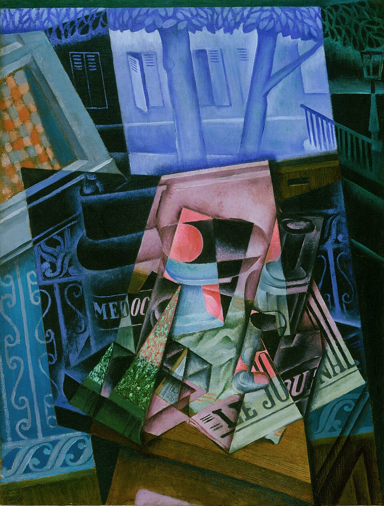
キュビスム
セザンヌの多視点から、解体・再構成と抽象絵画へ

未来派
速度・機械・連続する時間――イタリアの前衛運動

ダダ
反芸術・偶然・レディメイド――芸術の境界を問い直す
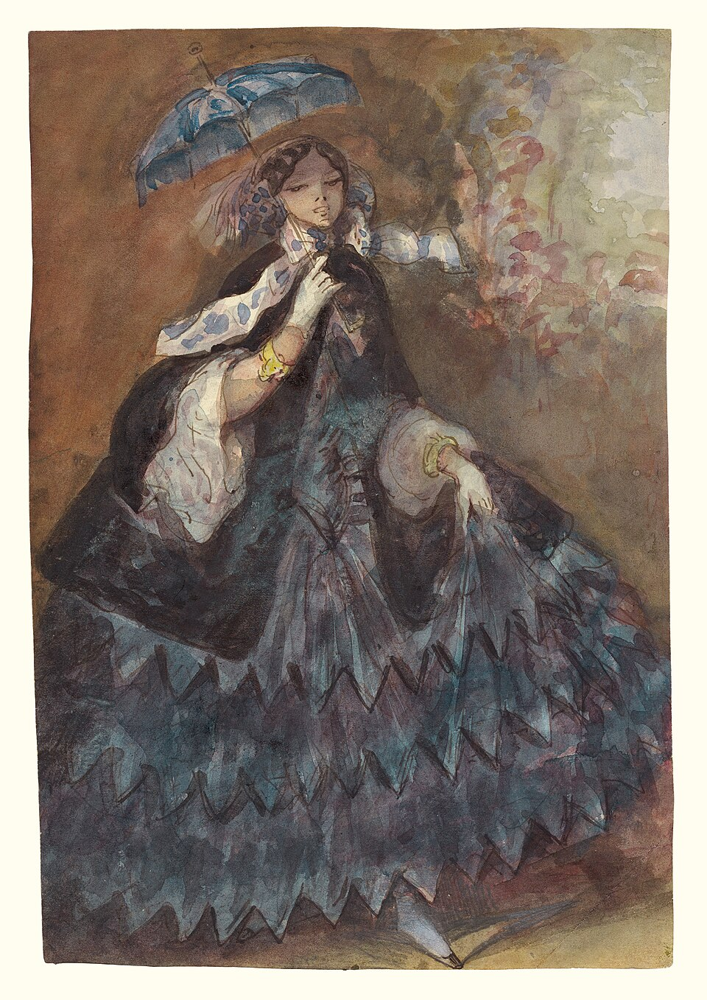
そして現代へ
近代性・相対的な美・概念――モダンとコンテンポラリー

プラカートシュティール
20世紀初頭ドイツのポスター革命――商品・人物・記憶を伝える

ユーゲントシュティール
ドイツ版アール・ヌーヴォー――分離派と雑誌が開いた芸術
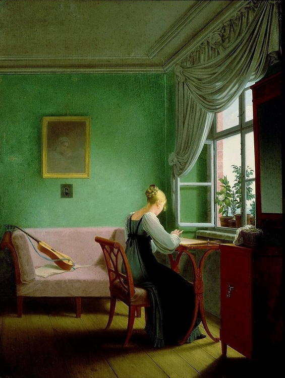
ビーダーマイヤー
市民生活が育んだ近代デザインの源流――家庭・家具・居心地のよさ
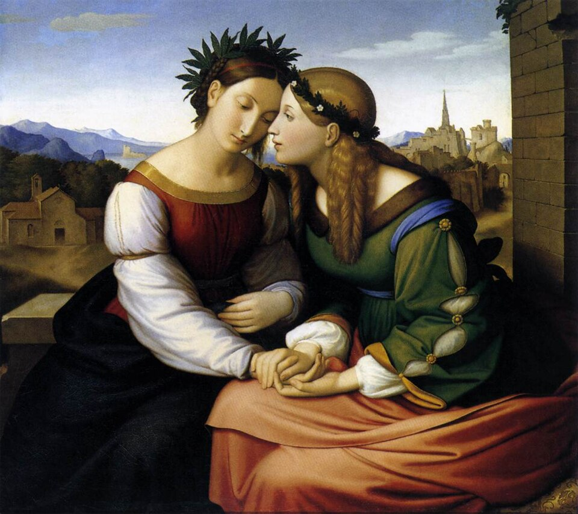
ナザレ派
ドイツの宗教文化から読み解く、19世紀初頭の宗教画復興運動

Les XX ― レ・ヴァン
19世紀末ベルギーの前衛芸術――自由な展示の実験とその限界

ノヴェチェント
イタリア性の再構築――古典への回帰と政治の交差

第二未来派
空に憧れた芸術家たち――新しい機械、視点、生活の表現
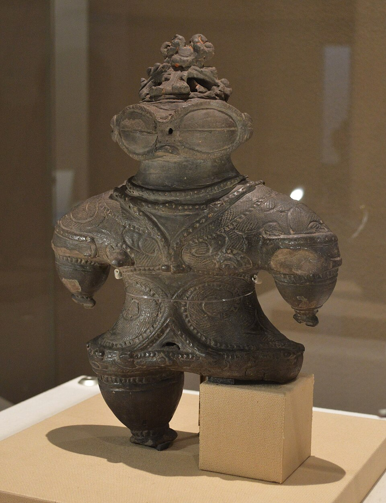
先史・古墳時代の美術
石器・縄文土器から、稲作と金属器、古墳・埴輪・装飾壁画へ

飛鳥・白鳳・天平時代の美術
仏教伝来から、止利様式・白鳳の仏像・天平の造形と正倉院へ

平安時代の美術
密教の造形から、和様の仏画と絵巻の物語表現へ

鎌倉時代の美術
南都復興と慶派から、多彩な絵巻・信仰・禅宗文化へ

南北朝・室町時代の美術
唐物と和漢の文化から、水墨画・工房・地方の美術へ

桃山・江戸時代初期の美術
天下人の城と障壁画から、茶の湯・町衆・王朝文化へ

江戸時代中期・後期の美術
琳派・写生・南画・浮世絵と工芸から、幕末の変化へ

明治時代の美術
洋画の受容、日本画の革新、学校・展覧会と近代化

大正・昭和時代〜1945年の美術
個性と前衛、民藝運動、戦時下の創造と統制

1945〜1970年代の美術
戦後の再出発、反芸術、もの派と表現の拡大

色彩と西洋絵画の画材
色の三要素・補色・点描から、支持体・絵具・道具まで
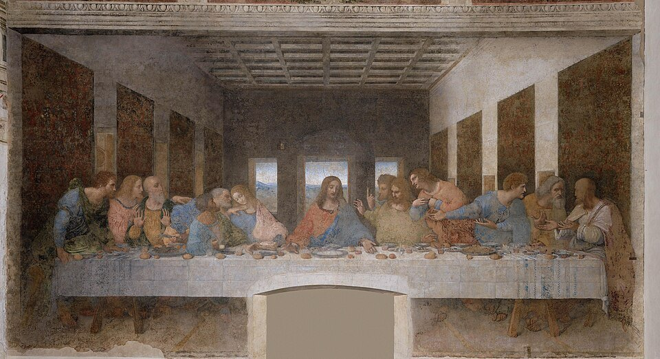
西洋絵画の技法
遠近法、フレスコとテンペラ、版画の4形式、20世紀の技法

日本絵画の画材・表装・技法
紙本と絹本、巻子・掛軸・屏風、たらしこみ・雲母摺
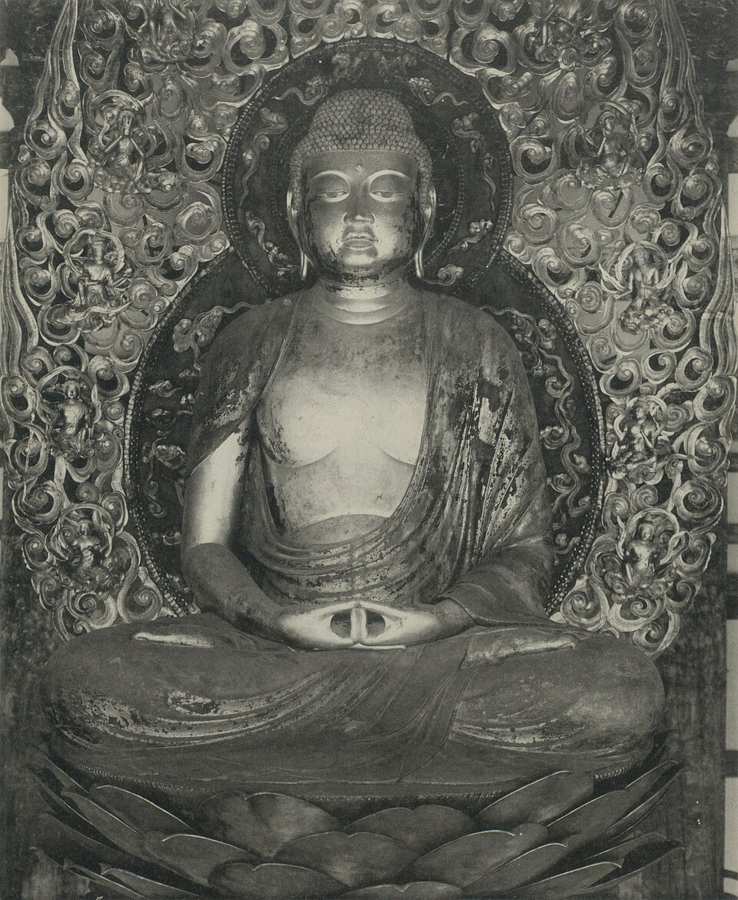
仏像のかたちと作品名の読み方
如来形の各部・印相・造仏方法と、作品名の組み立て
美術館・美術行政・国際展
美術館の機能、博物館法と2022年改正、美術館の歴史、国際展
美術の時事 2025〜2026
美術館が抱える課題と、国内外の美術館・国際展の出来事
条件に合う教材が見つかりませんでした。